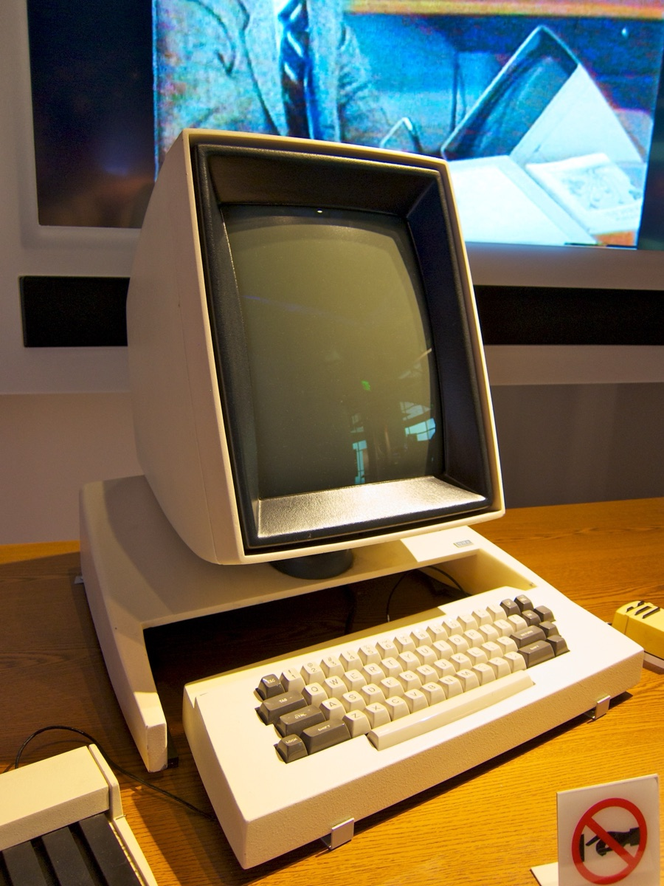
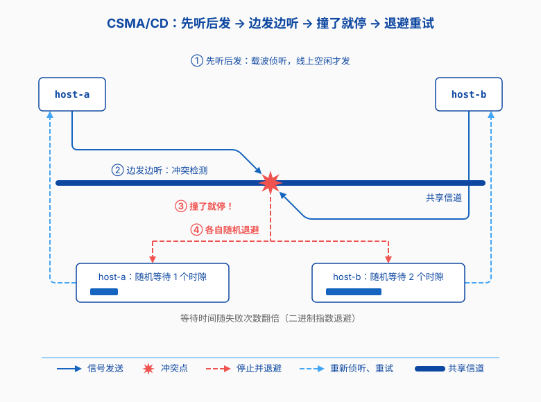
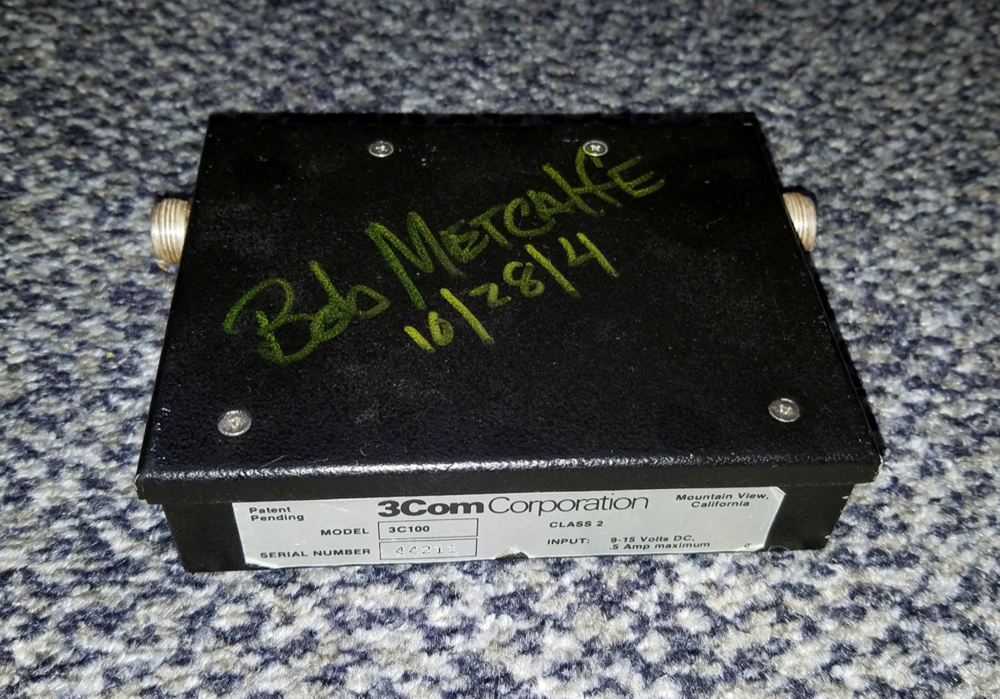
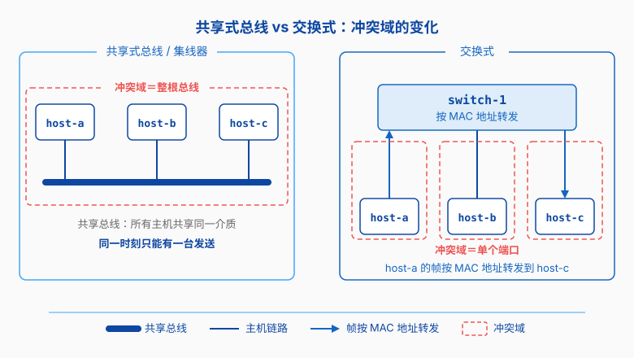
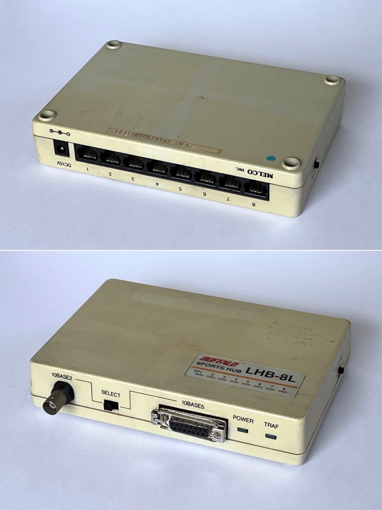

以太网的五十年
第七章的网络基础讲链路层怎么把帧从一台机器送到另一台，却没讲这套东西是怎么来的。它背后是五十多年的历史：一个从施乐帕克实验室里长出来的实验网络，后来靠三家公司的联手推向市场，把令牌环、FDDI、ATM 这些当年被看好的方案都熬了过去。
为什么这个又简单又不优雅的方案能赢？这篇按时间讲一遍。
施乐帕克的一张草图
1972 年，还在哈佛读研究生的 Bob Metcalfe 进了施乐在加州的帕洛阿尔托研究中心，也就是“施乐帕克”。这里做出过图形界面、激光打印机和第一台个人工作站 Alto。他接到的题目，是让实验室里各说各话的机器连成一个网。
1973 年 5 月，他写了一份备忘录，画了一张草图：几台计算机挂在一条粗线上，线的上方写着“Ether”。这就是以太网的第一份方案。同年，他和同事 David Boggs 把实物造了出来；据公开资料，第一版速度是 2.94 Mb/s。到 1970 年代中期，帕克里的上百台机器挂上这条线，共用文件、打印机和邮件。

“以太”这个词从哪来
“以太”是个老词。19 世纪的物理学家相信，光要靠一种充满宇宙的介质传播。这种假想的介质叫“光以太”。1887 年，迈克尔逊和莫雷做实验，没有找到它；1905 年，爱因斯坦的相对论不再需要它。
Metcalfe 又把它捡了回来。按他后来的说法，他要表达的是一层到处都在、完全被动的介质：比特从这头放进去，就能被送到每个角落。最早的以太网里，这层介质就是那根同轴电缆；后来换成双绞线、光纤，也只是换一种材料。他当时怎么想到这个词，公开的回忆说法不一。能确定的是，名字就这样留了下来。
一根电缆，大家抢着说
最早的以太网是一根总线。一条粗同轴电缆从楼里穿过，所有机器都挂在这根线上。谁要发数据，就把信号放上电缆，全楼都听得到。每台机器在帧里找目的地址，不是自己的就丢掉。介质共享，谁先开口谁占用。
夏威夷大学的 Norman Abramson 在 1970 年前后做过 ALOHAnet：站点用无线电隔海对讲，想发就发，撞了就重发。Metcalfe 读过他的论文，把它改成以太网的规则：发之前先听，线上空闲才发；发的时候继续听，撞上就停，各自等一个随机时间再来。合起来就是 CSMA/CD，载波侦听多路访问／冲突检测。
冲突是无中心网络里最麻烦的事，CSMA/CD 把决定权交给运气：两台机器同时开口，就都退一步，随机等一小段时间再来，等待时间随失败次数翻倍。网一忙，碰撞变多，效率往下掉。它的好处是：没有调度器，插上线就能说话。帧会不会丢，以太网不管，重传交给上层的 TCP。

三家公司与蓝皮书
以太网在帕克待了几年，没等来施乐的重用。施乐的主业是复印机，没能把它做成生意。1979 年，Metcalfe 离开施乐，参与创办 3Com。1979 到 1980 年间，造小型机的 DEC 和造芯片的 Intel 都想让机器连起来，三家公司坐到一起，宣布联手推广，首字母合起来就是 DIX。
1980 年 9 月，三家公司联合发布第一版以太网规范，封面是蓝色的，这份规范后来在圈里被叫作“蓝皮书”（Blue Book）。同一年，IEEE 成立 802 委员会；802 这个编号，常见的解释是取自当年 2 月的第一次会议。委员会把 DIX 的规范接过去，稍作调整，1983 年 IEEE 802.3 获批。以太网从一家公司的技术，变成谁都能照着做的公共标准。
公开的标准让网卡生意热闹起来。哪家厂商都能造网卡，各家厂商在同一套规则下互相压价；用户不用认死一家供货商，插上就能用；价格降下去，装机量涨上来。

令牌环、FDDI 与 ATM
那二十年里，局域网里有好几种方案可选。最像对手的是 IBM 的令牌环：机器连成一个圈，一个令牌在圈里转，拿到令牌的才能发，发完再把令牌传下去。它不会撞车，负荷重的时候也稳。IBM 在商用计算里话语权大，它推什么，客户往往就买什么，1980 年代不少人认定令牌环才是局域网的未来。
同期还有 FDDI：用光纤搭园区骨干网，速率 100 Mb/s，思路还是令牌环那套。再往后是 ATM：电信行业主推，数据切成 53 字节的小格子，承诺按需分配带宽，什么业务都能跑。1990 年代中期，不少人把 ATM 当成局域网的终点。
以太网的回应是价格和速度。它本来就便宜：双绞线到处都有，网卡简单，多家厂商在压价。速度上，1995 年跳到 100 Mb/s，1990 年代末跳到 1 Gb/s；FDDI 的 100 Mb/s 优势没了，ATM 的交换机一直降不下来。还有一张对手没有的牌：帧格式和上层的软件接着用，提速不用整套重做。
从共享总线到交换机
八十年代的办公室布线，是那根粗同轴电缆，线上一段出问题，整段瘫痪。1990 年，10BASE-T 标准定了下来：改用普通双绞线，一头插进墙上的 RJ45 口，另一头接到配线间的中心设备，拓扑从总线变成星型。再往后，长距离和主干换成光纤。
中心设备一开始是集线器，只干一件事：把一个口收到的信号复制给其他所有口。冲突域还是整台设备，机器越多，碰撞越密。1990 年前后，一家叫 Kalpana 的公司推出 EtherSwitch 一类的设备，把集线器换成了交换机：每个端口分开收发，帧按 MAC 地址转发到目标端口，冲突的机会少了一大截。

最后一步是全双工。共用一根线时，同一时刻只能有一个方向说话，才需要 CSMA/CD 那套礼让。1990 年代后期，全双工写进标准：网卡收发可以同时进行，不用再听线上有没有人说话。CSMA/CD 慢慢退场。

速率也在换：10 Mb/s 起步，1995 年 100 Mb/s，1998 年前后 1 Gb/s，2002 年前后 10 Gb/s，再往后是 2010 年前后的 100G 和 2017 年前后的 400G。
为什么它赢了
回到开头的问题。以太网能赢，原因大半在优雅之外：CSMA/CD 靠听、抢和随机退避工作，忙起来效率就掉，这些它都认。可办公室里的文件传输、打印和网页，对确定性的要求没那么高；带宽够用，价格便宜，用户就站到了它这边。
另一条路是把麻烦交给上层。以太网只负责在同一段线路上把帧送到，送不到就送不到；重传、排序、确认这些活，交给 TCP。链路层保持笨，TCP 保持可靠，升级各做各的。
还有一点反常：它一直在换自己。介质从同轴换成双绞线，又加上光纤；总线换成星型，再换成交换网；半双工换成全双工。只有帧的基本框架——目的地址、源地址、类型、数据、校验——从 1980 年的蓝皮书一路沿用到现在，变的都是细节。
以太网就站在第七章那张四层地图的最底下，它不管上层跑的是 HTTP 还是 SSH，只管把帧送到下一跳。今天在 Linux 上敲 ip link，网卡那一行里有 ether 这个字，后面跟着一串地址；这个“ether”，就是那份 1973 年的备忘录留下的名字。